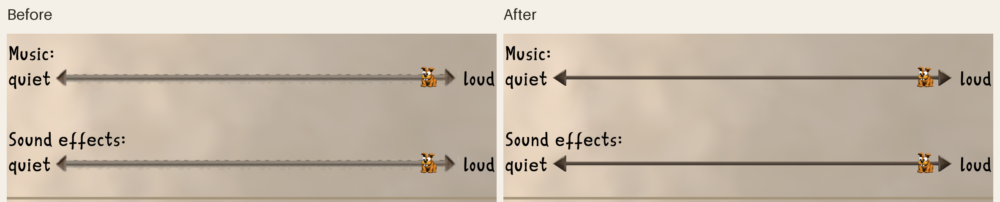

Before
Original arrows and track
Original 48×48 atlas, with the current high-resolution Wipf thumb.
Clonk · interactive art review
Drag either Wipf, click its arrows, or use the controls below. The original and revised sliders move together so you can compare their artwork at the same position. This preview draws from the game's original and proposed sprite atlases; the captured Audio options screen is below.
Original 48×48 atlas, with the current high-resolution Wipf thumb.
Proposed 384×384 atlas. The middle repeats the arrow tails' exact cross-section.
Tip: focus a slider and press ← or → for 1%, Page Up or Page Down for 10%, or Home and End for its limits.
Both images below are unscaled crops of the actual Audio options screen at 3× display scaling. The Wipf is at the right end in these captures; use the controls above to inspect other positions.
